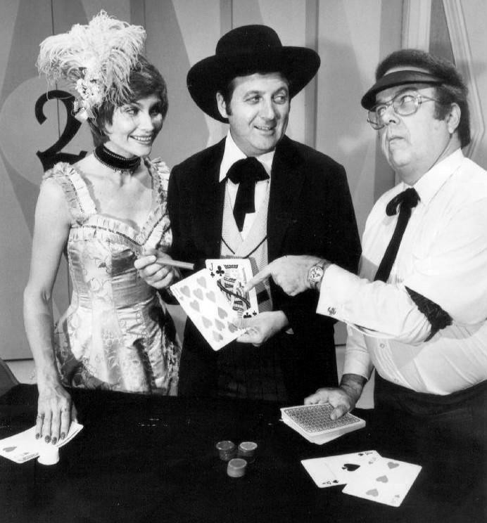
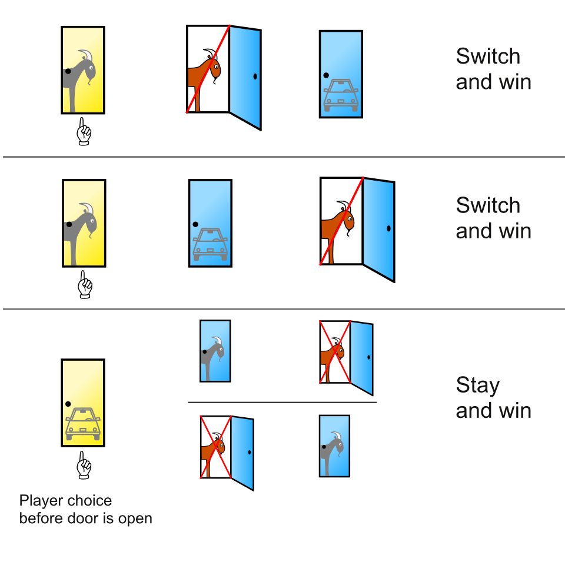
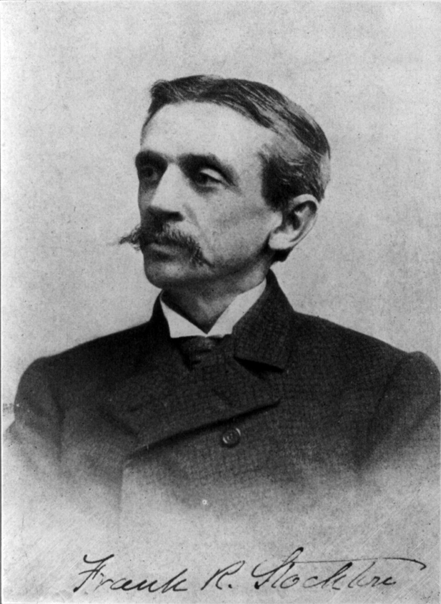

Read time15 minutes, plus 2 news links and a 13-minute story
The Little Lion Daily
小狮日报
Friday crosswordFill it in on screen · Page A4
Friday, 27 November 2026星期五 · 十一月二十七日Price: free for curious minds
Today's news · Your rights as a shopper
Cooling-off period for prepaid packages, stronger influencer ad oversight among recommendations to better protect consumers
CNA · Singapore · 27 Nov 2026
Why read it: Singapore's Consumer Protection Review Panel has released seven recommendations, covering things like losing money on prepaid packages and pressure selling, plus closer oversight of influencer advertising. You are a consumer every time you buy bubble tea, top up a game or sign up for a class, and you scroll past influencer ads every day. Notice which ideas would change how shops can sell to you. (It also pairs nicely with today's Future You · Business column on A2.)
Maths mystery · You be the judge · 6 min read + 1 game
Three doors, one car, and the puzzle that made professors furious
A game show question so sneaky that it fooled mathematicians with PhDs. A flock of pigeons, meanwhile, got it right.
By the Little Lion puzzles desk
Lights. Music. A studio audience screaming. You are standing on a TV stage in front of three closed doors, labelled 1, 2 and 3.
Behind one door is a shiny new car. Behind each of the other two is a goat. (A real one. It is chewing something. You don't want a goat.)
Step 1 You point at Door 1. Step 2 The host, who knows where the car is, walks over to Door 3 and flings it open. MEHHH. A goat. Step 3 He smiles. "Do you want to stick with Door 1… or switch to Door 2?"
Stop. Before you read on, decide. Stick or switch? Does it even matter?
If you said "It doesn't matter, it's 50–50 now, two doors left," congratulations: you're in excellent company. You're also wrong. You should switch. Switching wins the car two times out of three.
Stick: wins 1 in 3 Switch: wins 2 in 3As long as the host knows where the car is, always opens a goat door, and always offers the swap
Case file: where it came from. The puzzle is named after Monty Hall, the Canadian-born host of the American TV game show Let's Make a Deal, which began in 1963. Contestants on the show really did choose between doors, and the booby prizes even had a name: "zonks". In 1975, a statistician called Steve Selvin wrote up a version of the three-door puzzle in a letter to the journal The American Statistician.
It stayed a quiet nerd riddle until 1990, when a reader sent it to Marilyn vos Savant, who wrote a popular question-and-answer column in Parade magazine. She replied: switch. Her mailbag exploded. She received thousands of letters, and nearly a thousand of them were from people with PhDs, many telling her, sometimes rudely, that she had made a basic mistake.
She hadn't. Even the legendary Hungarian mathematician Paul Erdős, who wrote more research papers than almost anyone in history, reportedly refused to believe it until a friend showed him a computer simulation.

The real Monty Hall (centre) with Carol Merrill and announcer Jay Stewart, in a publicity photo for Let's Make a Deal.Photo: ABC Television / Wikimedia Commons, Public domain
So why does switching work? Forget the goat drama and look at your first pick.
When you pointed at Door 1, you had a 1-in-3 chance of being right. That means there was a 2-in-3 chance the car was somewhere in "the other two doors".
Now the host opens one of those other two doors. But he isn't guessing. He knows where the car is and he will always show you a goat. So opening that door doesn't change the odds of your first pick at all. It just squeezes the whole 2-in-3 chance of "the other two" into the one door left standing.
Put another way: switching wins every time your first pick was a goat. And your first pick is a goat two times out of three.

All three ways the game can go. You start with the yellow door. In two out of three, switching wins.Diagram: Rick Block / Wikimedia Commons, Public domain
Still not convinced? Make it huge. Imagine 100 doors. You pick Door 1. The host, who knows everything, opens 98 other doors, all goats, leaving only your door and Door 74. Would you really stick? Your first pick had a 1-in-100 chance. Door 74 survived a host who was carefully avoiding the car. Switch!
The fine print. The trick only works because the host knows and always opens a goat door. If he opened a door at random and it happened to show a goat, then it really would be 50–50. And in a 1991 interview with The New York Times, Monty Hall himself pointed out that on the real show he didn't have to offer a switch at all, so a sneaky host could use the offer to tempt you away from a winner. Maths only works when you know the rules of the game.
Weird but true
In a 2010 study, scientists Walter Herbranson and Julia Schroeder gave pigeons a Monty Hall–style game with lit-up keys. After lots of practice, the pigeons learned to switch almost every time. The human volunteers didn't get close.
Many people stick with their first door even after the maths is explained. One idea: we feel worse about losing after switching ("I had it and I gave it away!") than after sticking.
Hall was born in Winnipeg, Canada, in 1921 and hosted the show for decades. A probability puzzle is now his most famous legacy.
Try this · The three-cup game (5 minutes, 1 friend)
You need three cups and a coin. Your friend is the host: they hide the coin under one cup while you look away, and they must remember where it is.
1. You point at a cup. 2. The host lifts an empty cup from the other two. 3. Play 15 rounds where you always stick, then 15 where you always switch. Tally the wins.
What to expect
Over many rounds, sticking should win about a third of the time (around 5 of 15) and switching about two-thirds (around 10 of 15). With only 15 rounds, luck can wobble the numbers, so pool results with classmates. The more rounds you play, the closer you'll get to 1/3 and 2/3. That's the law of large numbers in action.
You decide
In today's story on A3, a young man also faces doors: one hides a lady, the other a tiger. The princess knows the secret and signals him. But unlike Monty's rules, we don't know whose side she's on. Is knowing who the "host" is, and what they want, more important than any maths?
The Little Lion DailyPage A2Friday, 27 November 2026
Psychology · Myth vs fact · 4 min read
Can too many choices make you choose nothing?
The bubble tea queue, the 40-item menu, and a famous experiment with jam.
By the Little Lion mind desk
You've reached the front of the bubble tea queue. Behind you, eleven people. In front of you, a menu board the size of an HDB void deck: milk teas, fruit teas, brown sugar, cheese foam, five sugar levels, four ice levels, nine toppings. Your brain goes bzzzt. You say, "Er… same as last time."
Sound familiar? Psychologists have a name for that frozen feeling: choice overload. And it all started with jam.
The experiment. In 2000, psychologists Sheena Iyengar and Mark Lepper published a study run at an upmarket supermarket in California. On some days, a tasting table offered 24 flavours of jam. On other days, just 6.
24 jams More shoppers stopped to look (about 60%). But only about 3% of those who stopped bought a jar. 6 jams Fewer shoppers stopped (about 40%). But about 30% of them bought a jar.
More choice got people's attention, and then scared their wallets away. The study became hugely famous, and businesses started trimming their menus.
The twist. Science doesn't end with one experiment. Other researchers tried to repeat the effect, sometimes finding it and sometimes not. A 2010 review that pooled dozens of choice experiments found that, on average, the effect was close to zero. Choice overload is real, but only in certain situations, for example when:
① the options are hard to compare, ② you don't already know what you like, ③ you're tired or rushed (hello, eleven people in the queue).
You be the judge: myth or fact?
"More choice is always better." Verdict
Myth. Sometimes extra options just add effort and regret.
"Too much choice always makes people give up." Verdict
Also a myth. It depends on the situation. Experts with clear preferences often enjoy big menus.
"Deciding your rules in advance makes choosing easier." Verdict
Fact, and it's a trick you can use today (see below).
Try this · Be a "satisficer"
The economist Herbert Simon coined the word satisficing (satisfy + suffice): instead of hunting for the perfect option, you pick the first one that meets your standards. Next time you face a giant menu, set two rules before you look, e.g. "less sugar, under $4". Choose the first drink that passes. Then stop looking. Notice whether you enjoy it any less.
Future You · Business
Unit economics: does each cup actually make money?
Know this
Unit economics means looking at the money made or lost on one unit: one cup, one haircut, one app subscriber. It's the first question investors ask, because a business that loses money on every sale can't fix it by selling more.
Take an imaginary bubble tea shop. A cup sells for $4.00. Tea, milk, pearls, the cup, straw and sealing film cost $1.40. What's left, $2.60, is the contribution margin: what each cup contributes towards the fixed costs that don't change with sales, like rent and wages. If those are $13,000 a month, the shop must sell 13,000 ÷ 2.60 = 5,000 cups (about 167 a day) just to break even. Cup number 5,001 is the first real profit.
Try this
Your CCA runs a brownie stall at a school carnival. One tray costs $12 and makes 24 brownies. The booth fee is $30. You plan to sell each brownie for $1.50.
1. What does one brownie cost to make? 2. What is the margin on each? 3. How many must you sell to break even? 4. A friend says, "Cut the price to $1, we'll sell loads!" How many do you need to sell now?
Answers
1. $12 ÷ 24 = $0.50. 2. $1.50 − $0.50 = $1.00. 3. $30 ÷ $1.00 = 30 brownies. 4. The margin halves to $0.50, so you need 60 brownies, double the sales just to break even. A small discount can take a big bite out of your margin.
For your application
Singapore's three main undergraduate business schools are NUS Business School, NTU's Nanyang Business School and SMU's Lee Kong Chian School of Business. Many business programmes look beyond grades, and some use interviews or other assessments, so check each school's official site for the current process.
The best evidence is something you actually ran. If you do a fundraiser or a CCA stall, keep a numbers log: costs, price, units sold, margin, and one thing you'd change. "We sold 84 brownies, but cutting the price halved our margin" is far stronger than "I am interested in business". Practise by explaining one business news story a week in three sentences, starting with today's consumer protection story on A1.
The Little Lion DailyPage A3 · Daily storyFriday, 27 November 2026
Daily story · a classic · about 13 minutes
The Lady, or the Tiger?
By Frank R. Stockton · first published 1882
Before you read. Frank R. Stockton (1834–1902) was an American writer, best known in his day for funny, fairy-tale-like stories for children and adults. This one first appeared in The Century magazine in November 1882 and made him famous overnight. Readers wrote to him for the rest of his life demanding the answer. He never gave one.
The language is old-fashioned and the sentences are long, so take your time; the narrator is being playful, especially with the word "semi-barbaric". Watch the princess closely: what does she know, what does she feel, and what might she choose? Then decide your answer before you reach the end, and see if you change your mind.
In the very olden time, there lived a semi-barbaric king, whose ideas, though somewhat polished and sharpened by the progressiveness of distant Latin neighbors, were still large, florid, and untrammelled, as became the half of him which was barbaric. He was a man of exuberant fancy, and, withal, of an authority so irresistible that, at his will, he turned his varied fancies into facts. He was greatly given to self-communing; and, when he and himself agreed upon any thing, the thing was done. When every member of his domestic and political systems moved smoothly in its appointed course, his nature was bland and genial; but whenever there was a little hitch, and some of his orbs got out of their orbits, he was blander and more genial still, for nothing pleased him so much as to make the crooked straight, and crush down uneven places.
Among the borrowed notions by which his barbarism had become semified was that of the public arena, in which, by exhibitions of manly and beastly valor, the minds of his subjects were refined and cultured.
But even here the exuberant and barbaric fancy asserted itself. The arena of the king was built, not to give the people an opportunity of hearing the rhapsodies of dying gladiators, nor to enable them to view the inevitable conclusion of a conflict between religious opinions and hungry jaws, but for purposes far better adapted to widen and develop the mental energies of the people. This vast amphitheatre, with its encircling galleries, its mysterious vaults, and its unseen passages, was an agent of poetic justice, in which crime was punished, or virtue rewarded, by the decrees of an impartial and incorruptible chance.
When a subject was accused of a crime of sufficient importance to interest the king, public notice was given that on an appointed day the fate of the accused person would be decided in the king's arena,—a structure which well deserved its name; for, although its form and plan were borrowed from afar, its purpose emanated solely from the brain of this man, who, every barleycorn a king, knew no tradition to which he owed more allegiance than pleased his fancy, and who ingrafted on every adopted form of human thought and action the rich growth of his barbaric idealism.
When all the people had assembled in the galleries, and the king, surrounded by his court, sat high up on his throne of royal state on one side of the arena, he gave a signal, a door beneath him opened, and the accused subject stepped out into the amphitheatre. Directly opposite him, on the other side of the enclosed space, were two doors, exactly alike and side by side. It was the duty and the privilege of the person on trial, to walk directly to these doors and open one of them. He could open either door he pleased: he was subject to no guidance or influence but that of the aforementioned impartial and incorruptible chance. If he opened the one, there came out of it a hungry tiger, the fiercest and most cruel that could be procured, which immediately sprang upon him, and tore him to pieces, as a punishment for his guilt. The moment that the case of the criminal was thus decided, doleful iron bells were clanged, great wails went up from the hired mourners posted on the outer rim of the arena, and the vast audience, with bowed heads and downcast hearts, wended slowly their homeward way, mourning greatly that one so young and fair, or so old and respected, should have merited so dire a fate.
But, if the accused person opened the other door, there came forth from it a lady, the most suitable to his years and station that his majesty could select among his fair subjects; and to this lady he was immediately married, as a reward of his innocence. It mattered not that he might already possess a wife and family, or that his affections might be engaged upon an object of his own selection: the king allowed no such subordinate arrangements to interfere with his great scheme of retribution and reward. The exercises, as in the other instance, took place immediately, and in the arena. Another door opened beneath the king, and a priest, followed by a band of choristers, and dancing maidens blowing joyous airs on golden horns and treading an epithalamic measure, advanced to where the pair stood, side by side; and the wedding was promptly and cheerily solemnized. Then the gay brass bells rang forth their merry peals, the people shouted glad hurrahs, and the innocent man, preceded by children strewing flowers on his path, led his bride to his home.
This was the king's semi-barbaric method of administering justice. Its perfect fairness is obvious. The criminal could not know out of which door would come the lady: he opened either he pleased, without having the slightest idea whether, in the next instant, he was to be devoured or married. On some occasions the tiger came out of one door, and on some out of the other. The decisions of this tribunal were not only fair, they were positively determinate: the accused person was instantly punished if he found himself guilty; and, if innocent, he was rewarded on the spot, whether he liked it or not. There was no escape from the judgments of the king's arena.
The institution was a very popular one. When the people gathered together on one of the great trial days, they never knew whether they were to witness a bloody slaughter or a hilarious wedding. This element of uncertainty lent an interest to the occasion which it could not otherwise have attained. Thus, the masses were entertained and pleased, and the thinking part of the community could bring no charge of unfairness against this plan; for did not the accused person have the whole matter in his own hands?
This semi-barbaric king had a daughter as blooming as his most florid fancies, and with a soul as fervent and imperious as his own. As is usual in such cases, she was the apple of his eye, and was loved by him above all humanity. Among his courtiers was a young man of that fineness of blood and lowness of station common to the conventional heroes of romance who love royal maidens. This royal maiden was well satisfied with her lover, for he was handsome and brave to a degree unsurpassed in all this kingdom; and she loved him with an ardor that had enough of barbarism in it to make it exceedingly warm and strong. This love affair moved on happily for many months, until one day the king happened to discover its existence. He did not hesitate nor waver in regard to his duty in the premises. The youth was immediately cast into prison, and a day was appointed for his trial in the king's arena. This, of course, was an especially important occasion; and his majesty, as well as all the people, was greatly interested in the workings and development of this trial. Never before had such a case occurred; never before had a subject dared to love the daughter of a king. In after-years such things became commonplace enough; but then they were, in no slight degree, novel and startling.
The tiger-cages of the kingdom were searched for the most savage and relentless beasts, from which the fiercest monster might be selected for the arena; and the ranks of maiden youth and beauty throughout the land were carefully surveyed by competent judges, in order that the young man might have a fitting bride in case fate did not determine for him a different destiny. Of course, everybody knew that the deed with which the accused was charged had been done. He had loved the princess, and neither he, she, nor any one else thought of denying the fact; but the king would not think of allowing any fact of this kind to interfere with the workings of the tribunal, in which he took such great delight and satisfaction. No matter how the affair turned out, the youth would be disposed of; and the king would take an æsthetic pleasure in watching the course of events, which would determine whether or not the young man had done wrong in allowing himself to love the princess.
The appointed day arrived. From far and near the people gathered, and thronged the great galleries of the arena; and crowds, unable to gain admittance, massed themselves against its outside walls. The king and his court were in their places, opposite the twin doors,—those fateful portals, so terrible in their similarity.
All was ready. The signal was given. A door beneath the royal party opened, and the lover of the princess walked into the arena. Tall, beautiful, fair, his appearance was greeted with a low hum of admiration and anxiety. Half the audience had not known so grand a youth had lived among them. No wonder the princess loved him! What a terrible thing for him to be there!
As the youth advanced into the arena, he turned, as the custom was, to bow to the king: but he did not think at all of that royal personage; his eyes were fixed upon the princess, who sat to the right of her father. Had it not been for the moiety of barbarism in her nature, it is probable that lady would not have been there; but her intense and fervid soul would not allow her to be absent on an occasion in which she was so terribly interested. From the moment that the decree had gone forth, that her lover should decide his fate in the king's arena, she had thought of nothing, night or day, but this great event and the various subjects connected with it. Possessed of more power, influence, and force of character than any one who had ever before been interested in such a case, she had done what no other person had done,—she had possessed herself of the secret of the doors. She knew in which of the two rooms, that lay behind those doors, stood the cage of the tiger, with its open front, and in which waited the lady. Through these thick doors, heavily curtained with skins on the inside, it was impossible that any noise or suggestion should come from within to the person who should approach to raise the latch of one of them; but gold, and the power of a woman's will, had brought the secret to the princess.
And not only did she know in which room stood the lady ready to emerge, all blushing and radiant, should her door be opened, but she knew who the lady was. It was one of the fairest and loveliest of the damsels of the court who had been selected as the reward of the accused youth, should he be proved innocent of the crime of aspiring to one so far above him; and the princess hated her. Often had she seen, or imagined that she had seen, this fair creature throwing glances of admiration upon the person of her lover, and sometimes she thought these glances were perceived and even returned. Now and then she had seen them talking together; it was but for a moment or two, but much can be said in a brief space; it may have been on most unimportant topics, but how could she know that? The girl was lovely, but she had dared to raise her eyes to the loved one of the princess; and, with all the intensity of the savage blood transmitted to her through long lines of wholly barbaric ancestors, she hated the woman who blushed and trembled behind that silent door.
When her lover turned and looked at her, and his eye met hers as she sat there paler and whiter than any one in the vast ocean of anxious faces about her, he saw, by that power of quick perception which is given to those whose souls are one, that she knew behind which door crouched the tiger, and behind which stood the lady. He had expected her to know it. He understood her nature, and his soul was assured that she would never rest until she had made plain to herself this thing, hidden to all other lookers-on, even to the king. The only hope for the youth in which there was any element of certainty was based upon the success of the princess in discovering this mystery; and the moment he looked upon her, he saw she had succeeded, as in his soul he knew she would succeed.
Then it was that his quick and anxious glance asked the question: "Which?" It was as plain to her as if he shouted it from where he stood. There was not an instant to be lost. The question was asked in a flash; it must be answered in another.
Her right arm lay on the cushioned parapet before her. She raised her hand, and made a slight, quick movement toward the right. No one but her lover saw her. Every eye but his was fixed on the man in the arena.
He turned, and with a firm and rapid step he walked across the empty space. Every heart stopped beating, every breath was held, every eye was fixed immovably upon that man. Without the slightest hesitation, he went to the door on the right, and opened it.
Now, the point of the story is this: Did the tiger come out of that door, or did the lady?
The more we reflect upon this question, the harder it is to answer. It involves a study of the human heart which leads us through devious mazes of passion, out of which it is difficult to find our way. Think of it, fair reader, not as if the decision of the question depended upon yourself, but upon that hot-blooded, semi-barbaric princess, her soul at a white heat beneath the combined fires of despair and jealousy. She had lost him, but who should have him?
How often, in her waking hours and in her dreams, had she started in wild horror, and covered her face with her hands as she thought of her lover opening the door on the other side of which waited the cruel fangs of the tiger!
But how much oftener had she seen him at the other door! How in her grievous reveries had she gnashed her teeth, and torn her hair, when she saw his start of rapturous delight as he opened the door of the lady! How her soul had burned in agony when she had seen him rush to meet that woman, with her flushing cheek and sparkling eye of triumph; when she had seen him lead her forth, his whole frame kindled with the joy of recovered life; when she had heard the glad shouts from the multitude, and the wild ringing of the happy bells; when she had seen the priest, with his joyous followers, advance to the couple, and make them man and wife before her very eyes; and when she had seen them walk away together upon their path of flowers, followed by the tremendous shouts of the hilarious multitude, in which her one despairing shriek was lost and drowned!
Would it not be better for him to die at once, and go to wait for her in the blessed regions of semi-barbaric futurity?
And yet, that awful tiger, those shrieks, that blood!
Her decision had been indicated in an instant, but it had been made after days and nights of anguished deliberation. She had known she would be asked, she had decided what she would answer, and, without the slightest hesitation, she had moved her hand to the right.
The question of her decision is one not to be lightly considered, and it is not for me to presume to set myself up as the one person able to answer it. And so I leave it with all of you: Which came out of the opened door,—the lady, or the tiger?
— THE END —

Frank R. Stockton. He later wrote a follow-up story, "The Discourager of Hesitancy" (1885), which still refuses to say which door opened.Photo: Unknown author / Wikimedia Commons, Public domain
Lady or tiger? Give your answer, then find two clues in the story that support it, and one that argues against it.
The king calls his arena a place of "impartial and incorruptible chance". Is it really fair? What does the princess's secret do to that idea?
Stockton refused to give an ending for the rest of his life. Was that a clever move or a cheat? Why do you think the story is still taught today?
The Little Lion DailyPage A4 · Fun & gamesFriday, 27 November 2026
Friday crossword · every answer is hiding in today's paper
Doors, odds and tigers
Tap a square and type. Use the page numbers in brackets if you're stuck. Press Check to see which letters are right.
1
2
3
4
5
6
7
8
9
10
11
12
13
Across
5 The king's amphitheatre of "incorruptible chance" (A3) (5)
6 Fierce beast behind one of the king's two doors (A3) (5)
7 Chances, as a bookmaker would say (4)
8 She knew the secret of the doors (A3) (8)
12 Price minus the cost of making one more item (A2) (6)
13 Open one and find your fate (4)
Down
1 The booby prize hiding behind two of the three doors (A1) (4)
2 Semi-barbaric ruler with "exuberant fancy" (A3) (4)
3 One of two in today's logic riddle: one lies, one doesn't (A4) (5)
4 What's left after every cost is paid (A2) (6)
8 Bird that learned to switch better than humans did (A1) (6)
9 Probability, or plain luck (6)
10 The winning move in the three-door game show puzzle (A1) (6)
11 The happier thing that might step out (A3) (4)
Brain teasers
Two logic puzzles and five riddles
The two guards. You stand before two doors. One leads to freedom, the other to a very hungry tiger. Each door has a guard. One guard always tells the truth; the other always lies. You don't know which is which, and you may ask one guard one question. What do you ask?
Show answerPoint at either guard and ask: "If I asked the other guard which door leads to freedom, which door would he point to?" Then take the opposite door. If you asked the truth-teller, he truthfully reports the liar's wrong answer. If you asked the liar, he lies about the truth-teller's right answer. Either way, the answer you hear is the tiger door.
The mislabelled boxes. Three boxes are labelled APPLES, ORANGES and MIXED. Every label is wrong. You may take out one fruit from one box, without looking inside. How can you then label all three correctly?
Show answerTake a fruit from the box labelled MIXED. Since its label is wrong, it holds only one kind. Say you pull out an apple: that box is APPLES. The box labelled ORANGES can't be oranges (wrong label) and can't be apples (taken), so it's MIXED. The last box is ORANGES.
What can you hold in your left hand but never in your right hand?
Show answerYour right elbow. (Try it.)
I have cities but no houses, forests but no trees, and rivers but no water. What am I?
Show answerA map.
Which nine-letter English word stays a real word each time you remove one letter, all the way down to a single letter?
Show answerSTARTLING → starting → staring → string → sting → sing → sin → in → I.